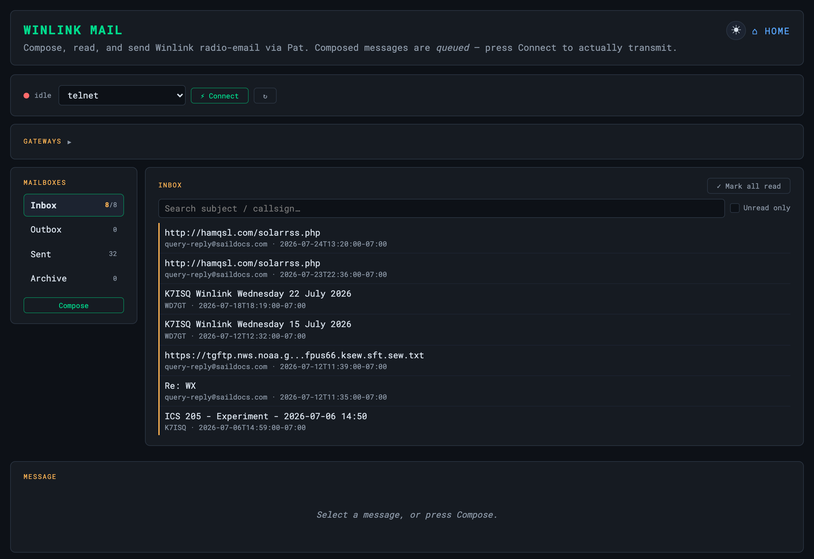
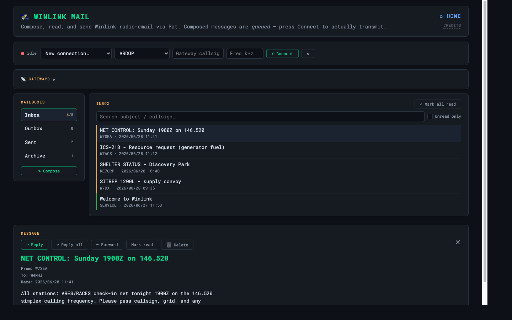

Winlink (Pat)
Store-and-forward radio email from a browser
Pat is a Winlink client with a browser UI — compose, read, and send
Winlink (radio email) from http://<pi-ip>:8082. A Winlink account for
your callsign is required.


Current capability. Internet Winlink via the Telnet gateway works immediately after install (the Pi needs internet). RF Winlink over radio is experimental — the wiring through GrayWolf’s KISS TNC is functional but not yet polished. Plan accordingly for a fully offline Field Day.
Install
python3 scripts/install-winlink.py # bundled .deb if present, else download
python3 scripts/install-winlink.py --callsign W4MHI
python3 scripts/install-winlink.py --no-service # install + config only
The script installs Pat, writes a starter ~/.config/pat/config.json
(mode 600; prompts for your Winlink password), and enables a pat systemd
service running pat http on :8082.
Telnet (internet gateway)
Works immediately: compose a message, then Action → Connect → telnet.
If you skipped the password prompt, set it with pat configure first.
RF (off-grid, experimental)
Phase 2 reuses GrayWolf’s KISS TNC as the modem. Enable KISS in GrayWolf
(Interfaces → KISS), then point Pat’s ax25.json at that port. The
plumbing is there but end-to-end setup is experimental — see the
GrayWolf KISS docs.
Plain HTTP, and config.json holds your Winlink password — keep this on your trusted LAN, not the open internet.